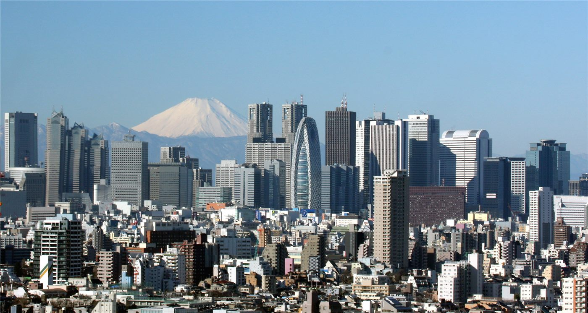

일본 일각서 ‘비핵 3원칙’ 완화론 재점화… 주변국 촉각
일본에서 이른바 ‘비핵 3원칙’을 완화하자는 주장이 다시 제기됐다. 주변국은 지역 안보 질서에 미칠 영향에 촉각을 세우고 있다.
손기요 기자 · 2026.07.21
橋국제

일본 일각에서 비핵 3원칙 완화를 거론하는 목소리가 나왔다고 환구망이 전했다. 비핵 3원칙은 핵무기를 ‘만들지도, 갖지도, 반입하지도 않는다’는 일본의 오랜 원칙으로, 전후 안보 정책의 근간으로 여겨져 왔다.
광고 문의 · 300×250이런 논의는 아직 정부의 공식 정책 변화가 아니라 일부의 의견 표명 단계로 전해진다. 다만 안보 원칙에 관한 발언은 주변국의 민감한 반응을 부르기 쉽다.
동북아는 여러 나라의 이해가 촘촘히 얽힌 지역으로, 한 나라의 안보 정책 변화 논의도 역내 신뢰와 군비 경쟁에 영향을 줄 수 있다.
華橋時報는 특정국의 안보 논의를 규탄이나 옹호가 아니라 사실 전달과 지역 안정이라는 관점에서 전한다. 서로 다른 나라들이 우려와 신뢰를 어떻게 관리하는지가, 동아시아 평화의 관건이라는 점을 균형 있게 짚는다.
출처·참고 (사실 확인용 — 본문은 직접 재작성)
· 環球網
· 環球網